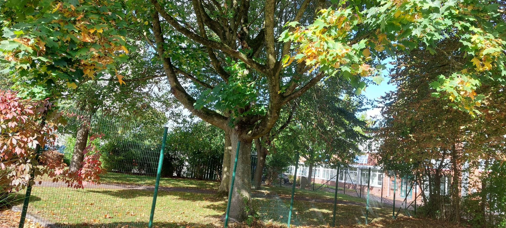

Einst nur ein kleiner Samen, nun ein mächtiger Stamm, welcher mit seinen Wurzeln die Erde um sich herum nach seinem Willen formt. Seine Blätter von der Zeit gelenkt, und doch steht er hier – stolz wie noch nie. Älter als jeder einzelne von uns, der es wagt, in seinen Schatten zu stolzieren. Und doch schenkt er uns diesen schattigen Ort, lädt uns zu sich ein, wenn die Sonne wieder erbarmungslos von oben herab scheint. Und als wäre dies nicht schon genug, ist er – der Baumgreis, seiner Zeit voraus – der Grund für unser Leben, wieso wir atmen können & dadurch seine Pracht bestaunen dürfen. Lebe noch lange und prächtig, oh du alter Greis, geschaffen aus der Natur – in welche wir uns irgendwann wieder eingliedern müssen.
? Zurück zur Navigation